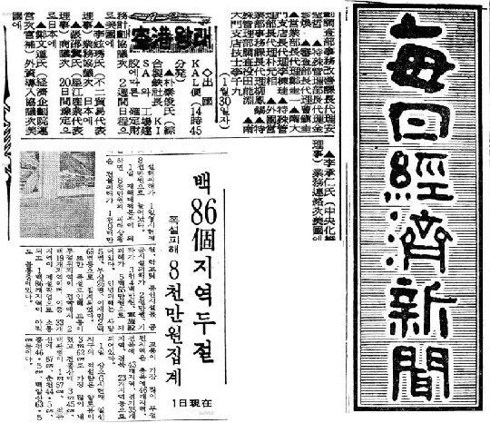

연재일 2014-12-05출처 조선일보 프리미엄조선 연재
1969년 2월 박태준이 하와이에서 대일청구권자금 여분을 포항제철 1기 건설비로 전용하자는 아이디어에 착안했고, 박정희가 그것을 재가했다. 이를 포스코는 ‘하와이 구상의 실현’이라고 한다. ‘하와이 구상’이라는 명명(命名)은 뒷날에 포스코가 했다. 당연한 일이다. 군사작전에는 암호명 같은 명명부터 이뤄지지만, 시대적 중대사에 대한 명명은 뒷날에 이뤄진다. 을지문덕 장군의 ‘살수대첩’이 그렇고 이순신 장군의 ‘명량대첩’이 그렇고, 박정희 대통령과 우리 국민이 이룩한 ‘한강의 기적’이 그렇듯이.
그런데 포스코가 ‘하와이 구상의 실현’이라 부르는, 박정희가 박태준의 대일청구권자금 전용 아이디어를 재가하고 강력히 밀고나간 ‘사실’에 대해 의혹을 제기하며 반박하거나 부정하는 시각과 회고가 있다.
‘KISA가 차관 조달을 회피하는 상황에서 대일청구권자금을 전용해 포항제철 1기를 건설하자고 했던 최초 아이디어가 누구의 것인가?’
이에 관한 포스코의 기록과 어긋나는 것은 극소수(연재 43회 참조)인데, 포항제철을 연구한 송성수의 주장과 박정희 정권의 경제팀에서 공로를 세운 오원철의 회고가 대표적이다.
먼저, 송성수의 주장에 대해.
송성수는 2002년 《한국과학사회학지》의 「한국 종합제철사업계획의 변천과정: 1958-1969」에서 ‘하와이 구상’에 대한 반론을 펼쳤다. 그는 『포항제철10년사』와 『포항제철건설지』를 근거로, 박태준이 1969년 1월 KISA에 차관조달 가능성을 타진하기 위해 미국에 간 것은 사실이 아니라고 주장하고, 애초에 존재하지 않았던 ‘하와이 구상’이 1989년을 전후하여 인위적으로 재구성된 것이라고 판단했다.
그리고 오원철의 회고를 참조하여, 1969년 4월 하순에 도쿄에서 열렸던 회의를 전후하여 한국정부의 교섭팀은 일본정부를 대상으로, 박태준은 일본철강업계를 대상으로 협력 여부를 타진했다고 볼 수 있다고 정리했다.
송성수의 주장은, 박태준이 1969년 1월에 미국으로 간 사실이 없다는 것이 핵심적 전제이다. 박태준이 그때 미국으로 가지 않았기 때문에 돌아오는 길이어야 하는 ‘하와이 구상’이 있었을 리 없다는 것이다. 그러니까 포스코의 ‘하와이 구상’이 조작이라는 송성수의 주장은 무엇보다도 1969년 1월 31일에 박태준이 미국으로 출국하지 않았다는 점을 근거로 삼고 있다. 그런데 근거가 붕괴되면 어떻게 되겠는가? 당연히 그 위에 세운 논리들도 다 붕괴할 수밖에 없다. 이것이 논리세계의 준엄한 법칙이다.
1969년 1월 31일 폭설에 덮인 김포공항에서 미국으로 출발했다(연재 41회)는 박태준의 회고를 정확히 뒷받침해주는 결정적인 자료가 존재한다. 그것은 1969년 2월 1일자 《매일경제신문》의 제2면에 자리 잡은「공항왕래」라는 조그만 알림이다. 주요 인사의 출입국 동정을 일러주는 바로 거기에 ‘박태준이 1월 31일 14시 45분발 미국행 KAL편’으로 출국한 사실이 나와 있다.
출국 목적이나 정부의 동행자도 박태준의 회고와 정확히 일치한다. 출국 목적이 ‘KISA와 공장건설에 따른 확정재무계획 협의차 2주간 일정으로 미국에 간다’고 되어 있으며, 같은 비행기에 경제기획원 운영차관보 정문도가 박태준과 같은 용무(외자도입 협의차)로 탑승한 사실도 알려주고 있다.
또한 박태준이 회고를 통해 그때 홋가이도 무로랑제철소에 연수 나가 있던 최주선이 통역담당으로 도쿄에서 합류했다고 했는데, 미국 가는 그 대한항공이 도쿄에 들른다는 점을 확인해주듯 해당 지면에는 ‘성강산업대표이사 장소(張邵)씨가 상의(商議)차 20일간 예정으로 일본에’ 간다는 것도 알려주고 있다. 뿐만 아니라, 그날 한국 신문들은 박태준의 폭설 기억을 증언해주듯 일제히 ‘폭설 피해’ 기사를 싣는다.
천안역 열차 추돌 대형참사는 가장 끔찍한 폭설 피해였다.(연재 41회)

포스코가 ‘하와이 구상’이라는 명명을 하기 전에 박태준 스스로가 ‘1969년 2월 하와이’와 관련하여 직접 언급한 공식적 기록들 중에 가장 빠른 것으로 확인되는 자료는 포스코가 소장한『임원간담회의 회의록』제3권이다. 1975년 5월 26일, 박태준은 그날 회의에서 포항제철 건설 초창기에 이뤄진 주요 사항을 요약하여 임원들과 중간 간부들에게 직접 들려주었다. 그때 속기록을 살펴보자.
<1968년 4월 1일 회사 창설 이후 KISA와 IBRD가 된다, 안 된다 해서 근 10개월 동안 허송세월을 하다가 더 이상 기다릴 수도 없고 해서 1969년 1월 31일 눈이 산더미 같이 쌓여 다른 여객기는 결항이 되고 마침 KAL만 운항한다고 해서 KAL기를 잡아타고 정문도(鄭文道) EPB 운영차관보와 같이 피츠버그에 갔음. 그때 워싱턴과 뉴욕에서 Westinghouse와 Blaw Knox의 사장 및 EXIM Bank들이 모여서 설명회를 개최한다고 전부 약속이 되어 있고 전용기까지 내놓으면서 야단법석인데, 그때 사람의 육감 같은 것이 있어서 가지 않고 본인은 피츠버그에서 하루 종일 잠만 잤음.
그때 이미 마음속으로는 이 사람들만 믿고 있다가는 안 되겠다는 결심을 하게 된 것임. 귀로에서 일본측과 교섭해 보아야 되겠다고 결심을 하고 八幡의 稻山嘉寬 사장과 만나자고 전보를 치고 돌아오면서 稻山嘉寬씨를 만났는데, 그때 기술협력을 해주겠다고 하는 결정적인 코멘트를 받은 것임.
그리고 귀국하여 회사에 돌아와 안 된다고 하면 전부 포기하고 도망갈 것 같아서 잘 되어간다고 했지만, 마음속으로는 청구권자금을 사용해야 되겠다고 하는 결심을 하고 있었음.>
이 속기록에 담긴 박태준의 육성을 들으면, 박태준의 ‘하와이 구상’은 1989년 전후한 시기에 인위적으로 재구성되었다는 송성수의 주장과 달리, 실제로 1975년 시점에서 거의 동일한 내용이 박태준에 의해서 회고되었다는 점을 확인할 수 있다. 생사고락을 같이하는 임원들과 중간 간부들 앞에서 왜 있지도 않았던 얘기까지 꾸며내는 수고를 하겠는가? 그것은 박태준의 성품에도 전혀 맞지 않거니와, 더구나 그때는 박정희 대통령이 막강한 가운데 KISA와 교섭했거나 종합제철에 관여했던 관료들이 더 성장하여 한창 활개를 치고 있었다.
낮말은 새가 듣고 밤말은 쥐가 듣는다고, 무엇 때문에 박태준이 자기성품에도 맞지 않는 거짓말을 꾸며내서 대통령의 눈총을 받거나 관료들과 부질없는 다툼이나 일으킬 화근을 자초하겠는가?
그날 박태준의 설명에는 포이의 동정적인 주선에 의해 귀국 도중 하와이에서 휴식했다는 전후 사정이 빠져 있다. 하지만 ‘돌아오는 길’에 일본과의 교섭 구상을 하고, 야하타(八幡)제철소 이나야마 사장에게 만나자는 전보를 쳤다고 했다. 전보를 치는 행위는 분명히 해외의 어느 장소에서 이루어진 것이었다.
비행기 안에서 전보를 칠 수야 없지 않는가? 박태준은 돌아오는 길에 어딘가에 들렀을 때 그곳에서 일본과 교섭해야겠다는 구상을 하고 이를 위해 이나야마와의 만남을 주선해줄 상대(도쿄 박철언) 앞으로 전보를 보내서 약속을 잡게 했던 것이며, 그 구상의 장소에서 출발하여 일본으로 들어가 이나야마를 만난 뒤에 한국으로 돌아왔던 것이다.
그날 속기록에는 ‘하와이’라는 지명이 등장하지 않지만, 1969년 2월 하와이에 대한 박태준의 회고는 언제나 한결같았다. 그해 1월 31일 김포공항의 폭설 상황이 그러했고, 그때 ‘회사 청산 절차를 준비하라’는 비밀지시를 받은 황경로의 기억이 그러했고, 포이가 주선해준 콘도가 그러했다.
특히 그때 박태준의 미국행에 통역담당으로 일본에서 합류했던 최주선은 “하와이에서 대일청구권자금 전용의 아이디어를 시적인 영감처럼 포착”하고 나서 매우 좋아하던 박태준의 모습을 들려주었으며, 포항제철 사사(社史)를 쓰기 위해 박태준의 회고를 장시간 받아 적은 이대공도 그때 ‘하와이 아이디어’를 대단히 중요한 사건으로 기억했다.
박태준의 ‘하와이 구상’이 1975년 5월 26일 포스코 속기록에는 뼈대만 등장하는데, 그는 뒷날의 회고에서 1969년 2월의 ‘하와이’를 즐거운 기억으로 자세히 풀어놓고는 “만일 그때 박정희 대통령이 여러가지 부담이 있음에도 불구하고 대일청구권자금 전용을 실질적으로 재가하고는 ‘일단 IECOK 총회까지만 기다려 보자’고 결심하지 않았더라면, 과연 어떻게 되었겠소? 포스코는 건설도 시작하기 전에 청산 절차를 밟아야 했겠지”라며 고개를 절레절레 흔드는 것으로 결말을 삼았다.